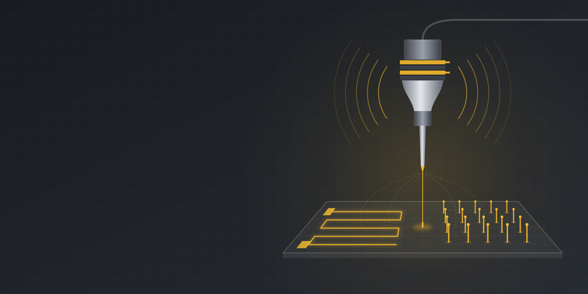

Multifield-assisted 3D printing
Ultrasonic vibration and electric fields let us print high-resolution functional structures for terrestrial and in-space manufacturing.
Explore this researchThe Wang Lab in the Department of Industrial and Systems Engineering at the University of Missouri develops advanced micro/nanomanufacturing processes and uses them to build biomedical devices and intelligent manufacturing systems.
Our work combines ultrasonic vibration, electric fields, and lasers with 3D printing to fabricate high-precision functional structures, from flexible circuits and laser-induced graphene sensors to neural probes for brain–machine interfaces. We also develop human-centered smart manufacturing systems that connect machines, data, and people through mixed reality, the industrial Internet of Things (IIoT), AI, and digital twins.
We collaborate with clinicians, neuroscientists, and industry partners to move these technologies toward real use. Our research is supported by the National Science Foundation, including an NSF CAREER Award, and by state, clinical, industry, and university sponsors.